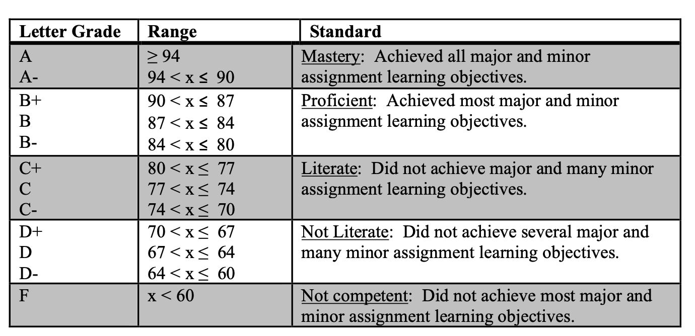

Policies
Course Overview
The main purpose of this seminar is to develop the capability to apply quantitative knowledge to real and ill-defined problems. It tries to bridge the gap between the theory of quantitative decision approaches such as management science/operations research, information systems, and statistics (now mainly collected in the Business Analytics field), and the application of these approaches to the solution of actual business problems.
Student Learning Objectives
- Develop a conceptual understanding of quantitative analysis techniques including model identification (model specification), model building (model fitting), model diagnosis, model solution testing and implementation, model analysis and interpretation of results.
- Work with a real world client to develop a solution to a real world analytic problem.
- Develop understanding of working in a group on a real world project.
Performance Evaluation
Course grades will be determined as follows:
| Assignment | Grade % |
|---|---|
| Framing Presentation | 20% |
| IPR Presentation | 20% |
| Final Presentation | 25% |
| Model Presentation | 10% |
| Make Sense Presentation | 10% |
| AAR | 10% |
| Participation/Team Eval | 5% |
| Total | 100% |
Class Policies
1. Honor Code:
Students in the Wake Forest School of Business are responsible for maintaining and adhering to the strictest standards of honesty and integrity in every aspect of their lives. We expect you to comply with our honor code:
- I will not lie.
- I will not cheat.
- I will not steal.
- I have a duty to report any potential honor violation of which I have direct knowledge of to a member of the Honor Council.
At times, you will be faced with academic decisions that challenge the ethical standards to which you committed when you joined the School of Business. You may also have to coach team members or classmates in dialogue on decisions, standards, expectations, and potential consequences of inappropriate choices. If you have questions about meeting our standards for honorable behavior in the School of Business, we will be more than willing to help guide you. To maintain the integrity of our learning environment, we commit to you that we will pursue and support sanctions against any violations.
2. Accommodation:
Wake Forest University provides reasonable accommodations to students with disability. If you would like to request an accommodation, please contact the Center for Learning Access, and Student Success Office (118 Reynolda Hall, 336-758-5929) or class.wfu.edu. You are encouraged to request an accommodation within the first two weeks of the course or as early in the semester as possible. No accommodations will be granted without proper documentation and accommodations are not retroactive. Information about your disability will be shared only on a need-to-know basis. If the need for an accommodation arises during the semester, please contact the Learning Assistance Center and Disability Office. School of Business students unfamiliar with the Learning Assistance Center and Disability Services Offices or who attend programs in the WFU Charlotte Center can contact their degree program Integrative Student Services staff member for assistance and guidance. Any students seeking to take advantage of an accommodation must let the professor know within 72 hours of the event or exercise.
3. Classroom Expectations.
Class Format
This course will consist of presentation of best practice in analytics project management as well as a number of student presentations. The format of the class largely discussion based, so class participation is a must. Please review the date for each class before attending to see if there is material to prepare for class.
Classroom Behavior
You are expected to conduct yourself with respect and professionalism toward faculty, students, and others present in the class. This classroom is a collaborative, respectful, and academically rigorous environment. To foster this environment, you are expected to be respectful of others and their contributions. Refrain from interrupting others, from holding side conversations and from using disparaging tones. Bring your laptop and notes to every class. Restrict your laptop use to class-related activities.
Attendance
You are expected to attend every class. As a courtesy, notify Dr. McGowan via email if you plan to miss class for excused or unexcused absences. In the event that you miss class, you are responsible for all the material covered in class, including handouts or other items distributed in class. If there is a deliverable due that day, you must submit it before the assigned deadline for that assignment unless there is a documented emergency or you have made arrangements with me before the deadline. In the event that you expect you will have an extended absence due to illness (ex. COVID positive, etc), you must contact Dr. McGowan as soon as possible to figure out how we will go forward. Please be on time for the class. It’s highly disruptive and unprofessional to have students walking into class after we’ve already started. You have been assigned to a project group. This is the group you will stay with throughout the duration of the course.
4. Course Requirements
Make-up Tests and Late Assignments
Make-up test and/or extensions will not be allowed except for emergencies, and you must submit those requests via email at least 24 hours in advance. Late assignments will be penalized by 10% or a letter grade for one late 24-hour period, e.g., an assignment with a score of 100 will receive a score of 90 if it is submitted late. Assignments that are more than 24 hours late will not be accepted.
Evaluation
We will evaluate your performance and assign letter grades based on the following standards:
 These grade ranges are guidelines to adjust your expectations, and understand where grades fall. We expect that not everyone will demonstrate mastery, but to be graded at that level, demonstrate mastery.
Grade Appeal
You should expect to receive your graded assignments within 7 days of submission. To appeal a grade, email a written statement explaining your request for re-grading to the instructor. Please justify the reasons for appeal by referring to specific problem and error you think was made. If you appeal your grade, the entire assignment will be re-graded so the grade may increase or decrease. Appeals must be submitted no later than 48 hours after a graded assignment has been returned by the instructor. Late requests for appeal will not be considered. This process does not exist because you do not like the first answer you received.
5. Course Continuation
This course may go online if the instructor for a class is quarantined. If we become unwell and cannot teach in person or remotely, an understudy instructor may step in. In this latter case, the new instructor will ensure that the course and its content will continue successfully, despite my necessary absence.
6. Generative AI (ChatGPT and the like) Policy
Artificial intelligence (AI) language models, such as ChatGPT, may be used during the course of your project with appropriate citation, but not for any quizzes or tests. If you are in doubt as to whether you are using AI language models appropriately in this course, I encourage you to discuss your situation with me. Examples of citing AI language models are available at: https://www.scribbr.com/ai-tools/chatgpt-citations/.
- If you used AI in an assignment, please include a paragraph at the end explaining what you used the AI for and what prompts you used to get the results.
- It is not appropriate to simply submit anything generated from AI tools without checking/modifying in some way for your use (just like putting quotes from another author in your own words).
- Don’t trust anything it says. If it gives you a number or fact, assume it is wrong unless you either know the answer, or can check it with another source. You will be responsible for any errors or omissions provided by the tool.
7. Class Recording Notice
- Recording of Class Sessions. All or some in-person and synchronous classes may be recorded.
Student images and voices may be captured in these recordings. Recordings will be available for viewing only by students enrolled in the class via Canvas or an alternative platform. The recordings are not available for download. No other recording, including by students, is permitted.
- Recording Tails in our Synchronous Classes. Synchronous class recordings may include events that happen before class officially begins or after it officially ends. Students should take care to not discuss any confidential matters during these periods of time.
- Access to Recordings. Students may access the class recordings made available to them solely for the purpose of participating in the course. The recordings may not be used by any person other than a student enrolled in the course or for any purpose other than to participate in the course. Students are prohibited from downloading or distributing any portion of the recordings for any purpose. Students should understand that technical problems or human error may prevent successful recording.
- Copyright Notice. Students are advised that Wake Forest University faculty members hold the copyright in their course materials. The University and the faculty have legal rights in class recordings.
8. Pandemic or Emergency Continuation Plan
In case classes are interrupted due to an emergency, continue with all readings as outlined in the syllabus. If the Internet is available, then your assignments will be available on Canvas. You would be expected to submit the completed assignments by the original due date. If the Internet is unavailable, then the deliverables will be mailed to you. Depending on when the emergency is declared, assignment grades will be either prorated or the additional weight will be placed on the test.